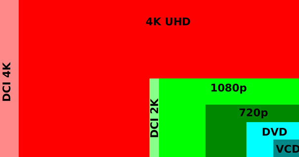
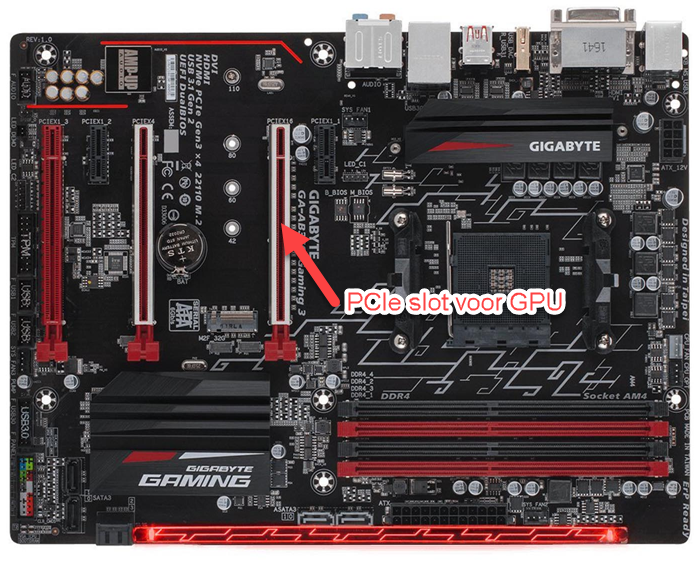

Resolutie en framerate
In onderstaand rekenvoorbeeld staan we even stil bij die grote hoeveelheden data die door de GPU verwerkt moeten worden.
Laat ons even uitgaan van de volgende waarden:
Full HD (1080p) = 1920 pixels horizontaal x 1080 pixels verticaal => 2 073 600 pixels in het totaal en het spreekt voor zich dat hoe hoger je de resolutie maakt, hoe meer pixels je nodig hebt.
In de praktijk wordt meestal gekozen voor Full HD. In de figuur zie je meteen wat voor impact 4k schermen hebben op het aantal pixels...

Iedere pixel moet een bepaalde kleur kunnen voorstellen. In het slechtste geval hebben we te maken met een zwart / wit scherm. In die situatie hebben we 1 bit nodig per pixel (0= wit, 1 = zwart).
Hoe meer kleuren je wil zien, hoe meer bits per pixel je nodig hebt om de kleuren voor te stellen. Meestal worden 24 bits per pixel gebruikt om ‘ware kleuren’ voor te stellen. Hiermee kan je 2^24 = 16.7 miljoen verschillende kleuren afbeelden per pixel.
Als je het volledig scherm wil ‘kleuren’ dan komt dit neer op 2 073 600 pixels * 24 bits = 49 766 400 bits. Ongeveer 50 miljoen bits ~= 50 Megabit ~= 6.25 MegaByte.
Een mens heeft ongeveer 25 beelden per seconde nodig om dit te aanzien als een vloeiend geheel. We noemen dit ook wel de framerate. Rekening houdend hiermee moet de GPU dus minstens 25 * 6.25 = 156.25 MegaByte per seconde genereren. In de praktijk is dit heel vaak het dubbele omwille dat we als framerate vaak 50 Hz nemen.
Daarnaast kan het zijn dat er meerdere schermen aangesloten worden. Ook dit verhoogt de nodige data die per seconde gegenereerd moet worden.
Het spreekt voor zich dat de framerate, de grootte van de resolutie en het aantal kleuren een invloed hebben op de benodigde rekenkracht van de GPU. Ook de berekeningen die gemaakt moeten worden bij spellen en CAD/CAM toepassingen hebben een grote impact op de GPU.
Moderne grafische kaarten worden aangesloten via PCI Express. Deze krijgen een rechtstreekse link met de processor en moeten niet langs de Platform Controller Hub (PCH).
![Blokschema van het Intel Z170-platform. Bovenaan de Intel Core i7-6700K-processor met Intel HD Graphics 530 erin; links ervan de lijnen PCI Express 3.0 voor de grafische kaart, te gebruiken als 1 keer 16, 2 keer 8 of 1 keer 8 en 2 keer 4 lijnen, en rechts twee aansluitingen DDR4/DDR3L-geheugen tot 2133/1600 MHz. Onder de processor hangt via DMI 3.0 de Z170-chipset, met rechts audio, zes SATA-poorten en opslag over PCI Express, en links tot twintig lijnen PCI Express 3.0 van 8 Gb/s elk, USB 3.0- en USB 2.0-poorten, de ingebouwde netwerkaansluiting en de SMBus. Twee rode pijlen met een handgeschreven bijschrift van de lector: PCIe graphics (rechtstreeks op CPU) wijst naar de lijnen bovenaan links, en PCIe voor netwerkkaarten etc. Via de PCH wijst naar de twintig lijnen aan de chipset.](../../../../img/syllabus-15-graphics-processing-unit-gpu-03.png)
